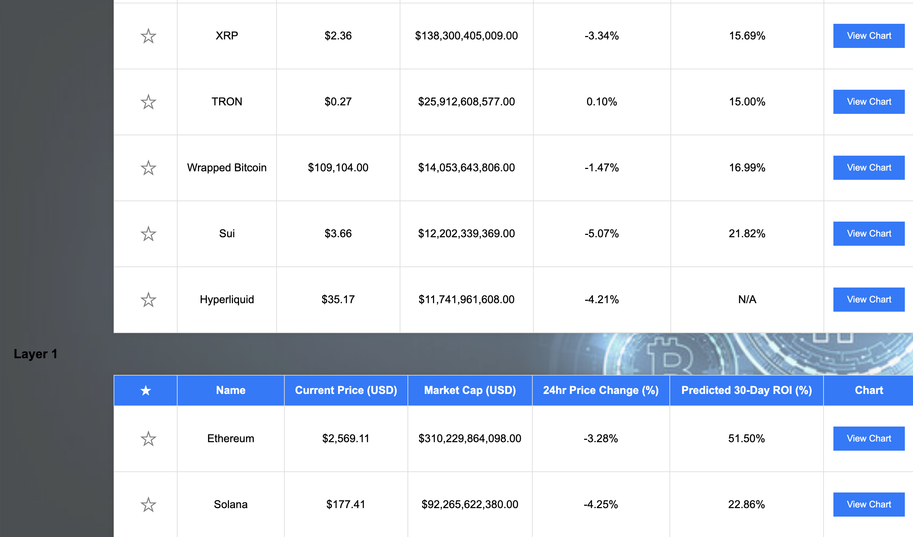
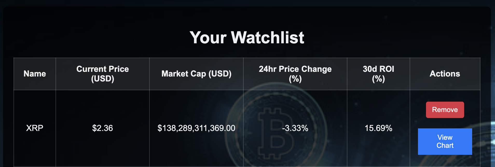
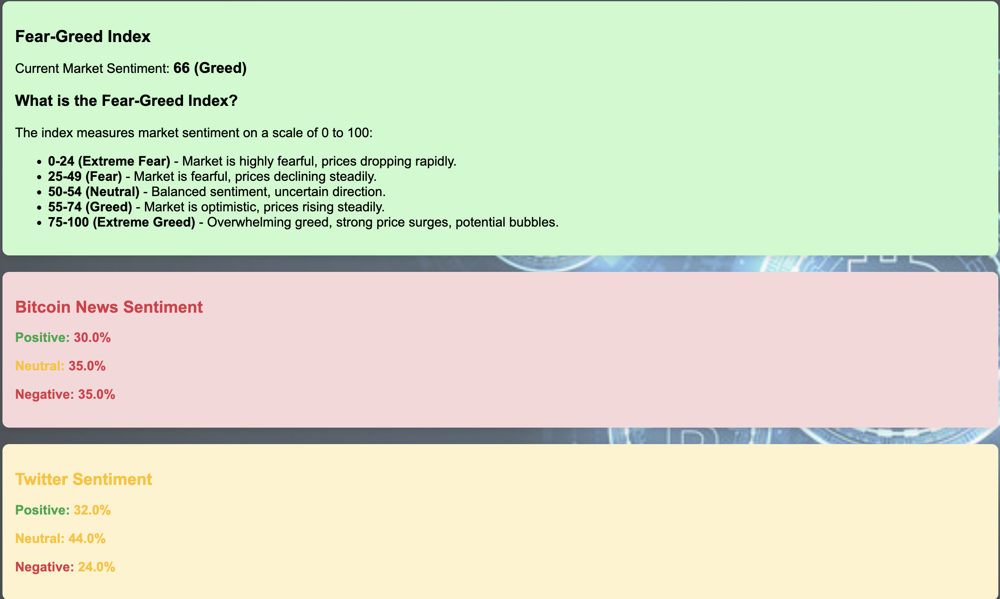
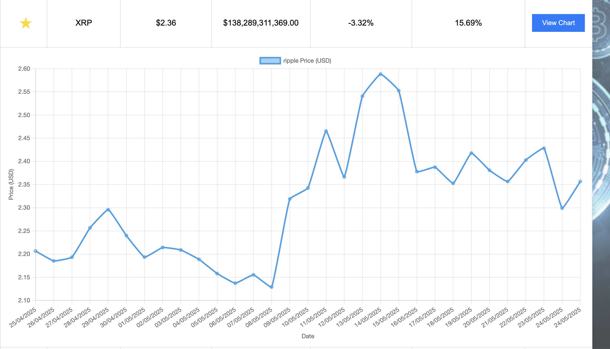

CryptoCompass is a beginner-focused cryptocurrency recommendation system that combines data-driven forecasting, social sentiment analysis, and live filtering tools to guide novice investors through a clutter-free crypto discovery experience.
The goal was to make investing in crypto accessible to new users by predicting 30-day ROI using linear regression, simplifying risk classification by market cap, and integrating social signals (Twitter, news, and Fear & Greed index) to help users understand public sentiment.
CryptoCompass Home — Choose your risk level and sector preferences
Results Page — Filtered coins, ROI predictions, and chart links
User Watchlist — Save and monitor favourite coins
Sentiment Analysis — Fear & Greed Index, Twitter and News sentiment
Interactive Chart — 30-day ROI trend visualised with Chart.js